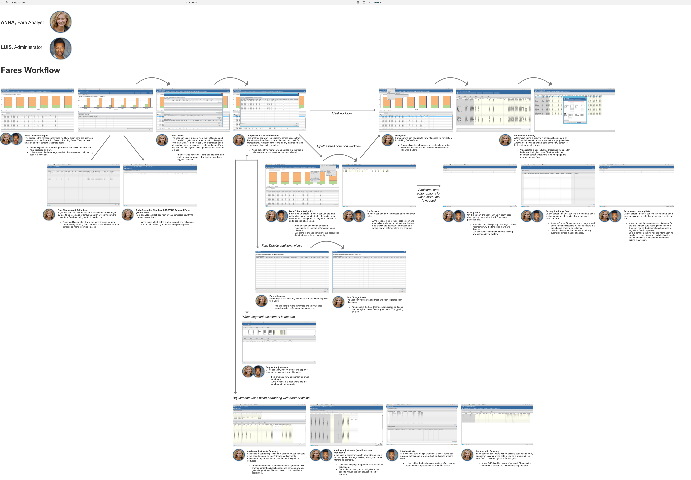
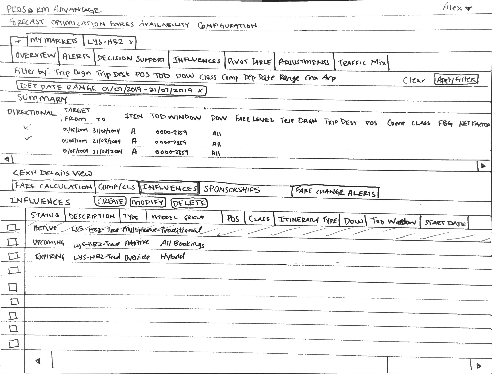

Overview
Format: Team project spanning 10-week summer internship
Roles: UX research and design
Product: Pricing software used by the majority of airlines worldwide. PROS travel software uses artificial intelligence to help airlines maximize their revenue from flight ticket sales. My team was specifically working on the Fares workflow, which is the portion of the software used by fare analysts to ensure optimal pricing before posting flight prices to the market.
The Challenge: Conduct research to determine customer pain points within existing workflow. Work with other researchers and designers to brainstorm and prototype solutions that solve for the pain points. Iterate on the design, incorporating feedback from user testing and requirements from Product Management and Development.
Task Diagramming
Before diving into the redesign of the workflow, with my team, I created a task diagram to understand how people in different job roles interact with the software. Fare analysts (the primary users) use PROS software to investigate fare pricing changes and ensure that flights are priced appropriately. Administrators use the software less frequently, only entering the system every couple months for approval purposes or editing data in the database.
Through this task diagramming exercise, it became obvious which screens were the most vital to each role's job functions. My team and I worked together to determine areas where we may be able to simplify the workflow.
Identifying Pain Points
Before I arrived at my internship, my teammates conducted the first round of interviews with proxies for our customers (customer success managers who frequently received direct feedback on the product). I listened to all the interviews to pull out key themes and pain points. My team analyzed our collective notes and perceptions of what the most urgent problems were within the system. We determined that the following issues were essential to address within our prototype before testing:
- The existing workflow requires significant jumping between screens for analysts to investigate fares. While analysts are able to view all the information that they need at a glance within a modal, they can't make any adjustments without navigating to several other separate pages.
- Fare analysts lose context when moving between tabs. In the existing modal containing four tabs with detailed fare information, the basic fare information is not visible except within the first tab. Losing context is annoying to users and causes the need to repeat steps.
- The fare details modal is visually cluttered. While our interviewees indicated that most of the information within the modal was necessary for analysts, there were several columns that repeated across multiple tables, and there were frequently empty tables within the modal since not all tables applied to all fares.
Paper Prototyping
My team worked together to sketch solutions and determine the most efficient pathway during design sessions. Once we had come up with a revised workflow, I created a paper prototype that incorporated these changes. We were able to show this prototype to the product manager and make adjustments before moving into high-fidelity prototyping. Pictured below are a few samples from the paper prototype.
Fare details replaces the bottom half of the screen in the new workflow, giving the user more space to view data. Empty tables do not appear, reducing visual clutter, and a summary at the top helps the analyst to retain context during investigation.
The analyst can view influences applied to the fare to help determine why the fare has triggered an alert.
Based on the results of fare investigation, the analyst can influence the fare directly from the Influences screen. This removes several steps in comparison to the old workflow.
Digital Prototype
I worked with a senior designer on my team to create a digital prototype within Axure. I specifically worked on tweaking the Alerts screen, which is where analysts can go to view and investigate fares whose prices have changed more than a defined threshold.
This page is continually being updated throughout the course of my internship. Please check back soon for new content!